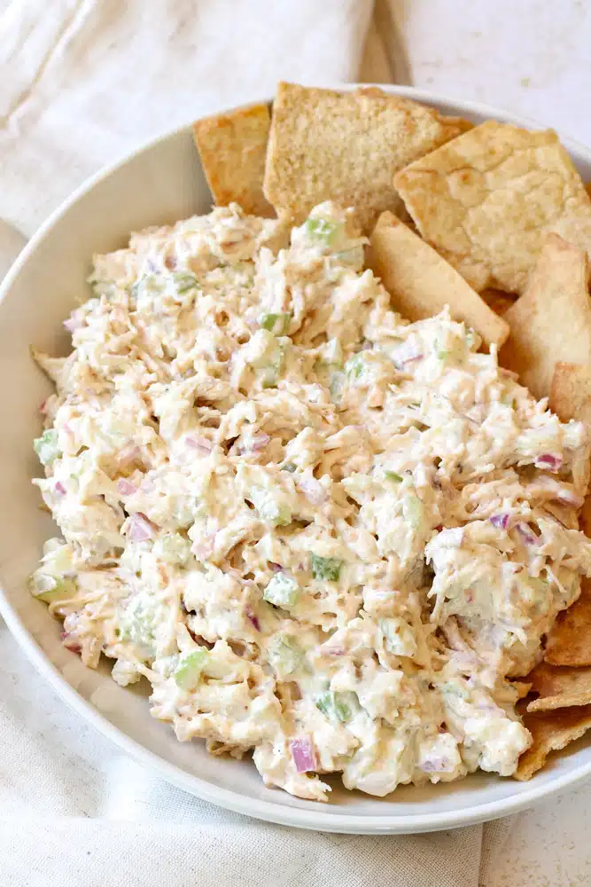

Chicken Salad Dip

Description
Chicken salad dip is a delightful and versatile dish that combines the classic flavors of chicken salad with the convenience of a dip. It typically features shredded or diced cooked chicken as the base, mixed with a creamy blend of mayonnaise and sometimes sour cream or Greek yogurt for added tanginess. To enhance the flavor and texture, the dip often includes finely chopped celery, red onions, and sometimes sweet pickles or relish. Fresh herbs like dill or parsley, along with a touch of mustard and a squeeze of lemon juice, bring a bright and zesty note to the mixture.
Perfect for parties, picnics, or as a snack, chicken salad dip is served chilled and pairs wonderfully with an assortment of dippers. Crackers, toasted baguette slices, and fresh vegetable sticks like carrot, celery, and cucumber are popular choices. This dip is not only delicious but also highly adaptable, allowing for the addition of ingredients such as grapes, nuts, or cranberries to suit different tastes. Its creamy and savory profile makes chicken salad dip a crowd-pleasing favorite that's both satisfying and easy to prepare.
Ingredients
- 2 cups cooked chicken, shredded or diced
- 1/2 cup mayonnaise
- 1/4 cup sour cream or Greek yogurt
- 1/4 cup finely chopped celery
- 1/4 cup finely chopped red onion
- 2 tablespoons sweet pickle relish (optional)
- 1 tablespoon Dijon mustard
- 1 tablespoon fresh lemon juice
- 2 tablespoons chopped fresh dill or parsley
- Salt and pepper, to taste
Steps
- Cook and shred or dice the chicken if not already done. You can use rotisserie chicken for convenience.
- In a large mixing bowl, combine the mayonnaise and sour cream or Greek yogurt. Stir until well blended.
- Add the chopped celery, red onion, and sweet pickle relish (if using) to the bowl. Stir to combine.
- Add the Dijon mustard, lemon juice, and chopped herbs. Mix well to ensure all ingredients are evenly distributed.
- Add salt and pepper to taste. Adjust the seasoning as needed, adding more lemon juice or herbs if desired.
- Cover the bowl and refrigerate for at least 30 minutes to allow the flavors to meld together.
- Transfer the chicken salad dip to a serving bowl. Serve chilled with an assortment of dippers such as crackers, toasted baguette slices, or fresh vegetable sticks.